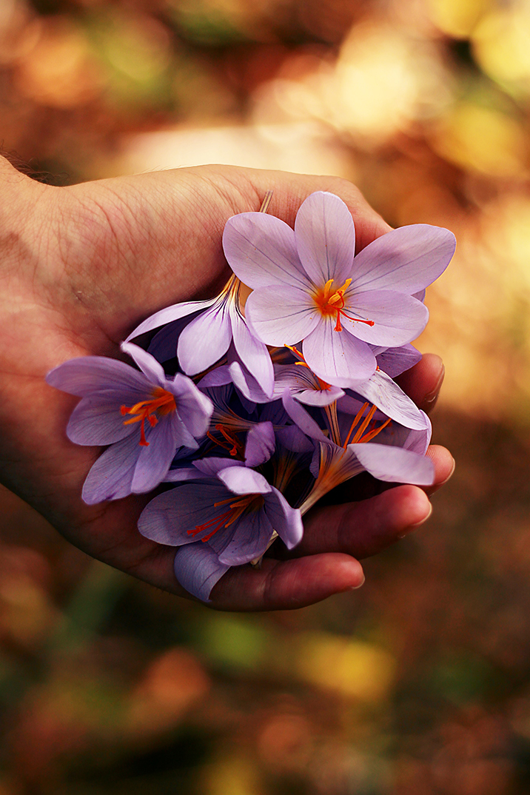

Par Margarita Rosa de Francisco
Cela n'a pas été facile. Je la connais depuis sa naissance. Tous les gens n'ont pas quelque chose d'aussi fidèle que moi à partir du moment où ils commencent à battre. J'ai commencé à vivre d'elle sans son autorisation et sans me soucier de son inconscience ou de son égocentrisme. Je bois de son sang. Je suis un parasite dont elle a appris à avoir besoin. Dès le début, je me suis accroché comme un lion en danger au bord de la falaise qui a été la peau de ses premières sensations et pensées. J'ai mis mes racines non seulement dans son corps, mais dans quelque chose de profond dans sa personnalité, car, plus tard, elle ne pouvait s'empêcher de me demander de l'aide pour se sentir «elle-même».
C'est rare. Il n'avait jamais pensé à elle, jusqu'à aujourd'hui. Je n'imaginais pas que je pouvais penser; Je suis une créature qui pousse de manière disproportionnée comme des mauvaises herbes, de manière indésirable et chaotique. Je suis une pure et dure volonté d'expansion, ce désir congénital dont souffre l'univers.
Je suppose que je n'ai pas de conscience parce que j'agis toujours de manière erratique et irrationnelle. Je ne comprends pas ou n'aime pas l'ordre, la loi ou les liens. Je sais être libre parce que je ne pense jamais. D'un autre côté, elle croit que la réflexion est très importante et est l'esclave de ses réflexions.
Je sais la tromper et la dérouter quand elle attend beaucoup de moi. J'en profite car il ne sait pas de quoi je suis composé. Cependant, cela me prend pour de vrai car, quand il semble trop léger et insignifiant et sur le point de traverser les murs comme un fantôme, il me saisit - comme je l'ai fait sur ses bords en lion - pour vérifier qu'il fait partie du monde organique. Nous nous détestons comme seuls les amoureux savent le faire: nous détruire et nous recréer le moment suivant.
Elle sent que c'est étrange de vivre. Pour moi, ce n'est même pas une question. Je suis à leurs dépens et cela suffit pour que ma «raison» soit quelque part. Même si chaque cellule de mon anatomie est morte, je me sens beaucoup plus digne de la vie qu'elle. Je me demande si je pourrais y survivre. Il est étrange de se sentir vital quand le sens de vivre dépend si radicalement de l'existence d'un autre.J'ai été mort pour elle plus d'une fois, mais j'ai le don de la résurrection quand elle me laisse seul. J'ai résisté à ses abus avec la noblesse que sa propre âme n'a pas. Elle dit qu'il n'y a pas d'âme (elle le répète tellement que je la crois de moins en moins), mais elle me traite comme si j'en avais une. Heureusement, être un bouquet de cheveux - c'est ce que je suis - semble avoir plus de sens que d'être un tas de contradictions ».